000
000
000
000
← Gallery
render
chars
chars
Broadcast
director name or group.
Regulation
classic
geek
geeker
geekest
classic (300 es)
geek (300 es)
geeker (300 es)
geekest (300 es)
classic (MRT)
geek (MRT)
geeker (MRT)
geekest (MRT)
Sound Shader
Export
60 frames
120 frames
180 frames
240 frames
300 frames
360 frames
94 frames
188 frames
376 frames
752 frames
1504 frames
1880 frames
128 x 128
256 x 128
256 x 256
512 x 256
512 x 512
1024 x 512
1024 x 1024
2048 x 1024
2048 x 2048
Download
Generate LINK
Sync scroll on Editor
Author / GitHub
doxas
twigl
ok
cancel